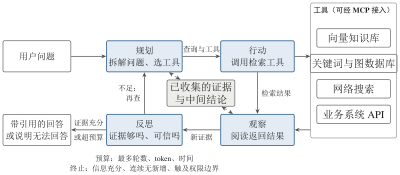

5.6 推理 RAG 与 Agentic RAG：让系统自己决定查什么
前面各节的 RAG 都是“先检索一次，再生成一次”。可是“对比我们和竞争对手过去三年的研发投入”这样的问题，下一步该查什么取决于上一步查到了什么，一次检索无法完成。本节介绍三种让模型“边推理边检索”的方法——先判断要不要查、查到后自我评估的 Self-RAG，查得不好就换地方查的 CRAG，以及推理与检索交替进行的迭代检索与 ReAct；再介绍把检索交给智能体规划的 Agentic RAG。结论是：检索从固定步骤变成了可以多轮决策的过程，能力随之增强，但延迟、成本和失控风险也同步上升，必须设置预算与终止条件。
推理 RAG（Reasoning RAG）把推理与检索融合起来：模型先分析用户的核心需求，借助思维链（Chain of Thought，CoT，即先写出中间推理步骤再给出结论）把复杂问题分解成多个步骤，在推理过程中识别“哪里不确定、需要查证”，动态决定检索什么，并对检索结果和自己的回答进行反思。下面三种方法是它的代表。
5.6.1 Self-RAG：先判断要不要查，再评估查到的东西
Self-RAG[22]的核心创新，是训练模型在生成过程中输出四类特殊的反思标记（reflection token），把“要不要检索”和“结果好不好”这两个判断交给模型自己完成（表 5-10）。
表 5-10 Self-RAG 的四类反思标记
| 标记 | 回答的问题 | 取值与用途 |
|---|---|---|
| Retrieve | 现在需要检索吗？ | 是 / 否 / 继续使用已有证据；为“否”时直接生成，省去检索 |
| IsRel | 这段检索结果与问题相关吗？ | 相关 / 不相关；过滤无关段落 |
| IsSup | 我生成的这句话被该段落支持吗？ | 完全支持 / 部分支持 / 不支持；衡量忠实度 |
| IsUse | 整个回答对用户有用吗？ | 1～5 分；在多个候选回答中择优 |
运行时，模型遇到需要事实支撑的地方输出 Retrieve=是，触发检索；对每个检索到的段落并行生成候选续写，并输出三类标记：IsRel 评价段落与问题是否相关，IsSup 评价续写是否有该段落支持，IsUse 评价续写对问题是否有用；系统按这些标记的概率加权打分，选出最好的续写继续生成。与第 5.4.5 小节由外部分类器决定是否检索不同，Self-RAG 把这一判断内化到模型的生成过程里：简单问题不检索，复杂问题可以在生成中多次检索。代价是需要用带反思标记的数据专门训练模型。
5.6.2 CRAG：查得不好，就换个地方查
CRAG（Corrective RAG，纠错式 RAG）[23]关注另一个问题：检索结果可能质量很差。它增加一个轻量的检索评估器，为检索结果打出置信度，并据此触发三种动作：
正确：对检索文档做“分解—过滤—重组”的知识精炼，即把文档切成更小的知识条，删去无关条目后再拼接使用；
错误：丢弃检索结果，改用网络搜索获取外部知识；
模棱两可：精炼后的检索结果与网络搜索结果同时使用。
CRAG 的思路很符合工程直觉：检索不是一锤子买卖，而是可以纠错的过程。承认第一次可能找错并提供补救路径，系统的鲁棒性会好得多。它与 Self-RAG 互补：Self-RAG 让生成模型自评，CRAG 用独立的评估器管住检索质量。
5.6.3 迭代检索与 ReAct
迭代检索（iterative retrieval）把“一次检索、一次生成”改为多轮循环：每一轮根据已有的推理和证据生成新的查询，检索结果再推动下一轮推理，直到信息足够。ReAct[24]给出了通用框架：让模型交替输出“思考”（Reason，分析现状、决定下一步）和“行动”（Act，调用检索等工具），工具返回的“观察”结果再进入下一轮思考。用于 RAG，就是“想—查—看—再想”的循环。
例如用户问“对比我们和竞争对手过去三年的研发投入趋势”。模型先查自家财报，提取三年研发费用；再查对手财报；发现对手某一年变更了会计准则，于是补查财报附注；最后把两边口径对齐，整理成表格。整个过程可能经历五到十轮检索，每一轮都由上一轮的结果驱动。
迭代检索的关键不是“多查”，而是“知道何时停”。工程上必须设置预算（最多几轮、最多多少 token、最长多少时间）和终止条件（信息已足够、连续两轮没有新增证据、已触及权限边界），否则模型容易在一个问题上反复打转，耗费大量成本。推理 RAG 适合需要多步推理的场景，例如结合病历、症状与医学文献辅助诊断，分析金融数据，逐步理解代码逻辑以定位缺陷。
5.6.4 Agentic RAG：把检索交给智能体
Agentic RAG 不再把 RAG 看作一条固定流水线，而是由一个或多个智能体（agent）自主规划检索过程。智能体是能够感知环境、规划步骤、调用工具并根据结果调整行动的系统，其组成与运行机制见第 6.2 节和第 6.3 节。在 Agentic RAG 中，智能体反复执行“规划—行动—观察—反思”的循环（图 5-5）：它可以决定先查哪个知识库、要不要调用业务系统接口、要不要向用户追问澄清、要不要把子任务分给其他智能体，并把已收集的证据保存在工作记忆中。

图 5-5 Agentic RAG 的决策循环。智能体反复执行“规划—行动—观察—反思”，每轮决定查什么、用哪个工具，直到证据充分或触及预算才生成回答；虚线表示读写已收集的证据
Agentic RAG 的能力可以分为两层。单智能体能力包括规划与调度、外部工具调用、多模态信息处理、自主决策，以及根据反馈持续学习与优化。多智能体协作则涉及智能体之间的通信、任务分解与分工、知识共享与同步、冲突解决与达成共识，例如一个智能体负责检索、一个负责核查、一个负责撰写。
工具接入方面，Anthropic 于 2024 年 11 月发布的模型上下文协议（Model Context Protocol，MCP）为模型调用外部工具与数据定义了统一接口：知识库、数据库、搜索引擎、业务系统都可以封装成标准化的服务，智能体按需调用，不必为每个数据源单独编写接入代码，这就是“基于 MCP 的 RAG 系统”的含义（协议细节见第 7.6 节）。2024 年底以来，多家厂商推出的深度研究（deep research）类产品就是 Agentic RAG 的典型形态：用户给出一个题目，系统自行拆解问题、多轮搜索、交叉验证，最后生成带引用的报告。
能力越强，代价越大。与基础 RAG 相比，Agentic RAG 每个问题要调用多次模型和工具，延迟和成本可能高出一个数量级；多轮调用会累积错误，一步查错，后面全歪；系统行为更难预测和审计。因此它适合高价值、低频率、容错空间较大的任务，如尽职调查、科研综述、复杂故障排查、个人智能助手和垂直领域的决策支持，而不适合每天数百万次的客服自动回复。成熟的架构通常是分层的：用路由器分流，简单问题走基础 RAG，复杂问题走高级 RAG，只有最难的少数问题才交给 Agentic RAG。
辨析
推理 RAG 与 Agentic RAG 的区别在于谁决定流程。推理 RAG（Self-RAG、CRAG、迭代检索）仍围绕“检索—生成”展开，只是让检索可以多次、可以纠错；Agentic RAG 中检索只是智能体可用的工具之一，流程由智能体规划，还可以调用非检索类工具、与其他智能体协作。另一组易混的概念是工作流与智能体：工作流的步骤由开发者预先写定（第 5.4 节的高级流水线即属此类），智能体的步骤由模型在运行时决定。步骤固定、需要可控时优先用工作流。